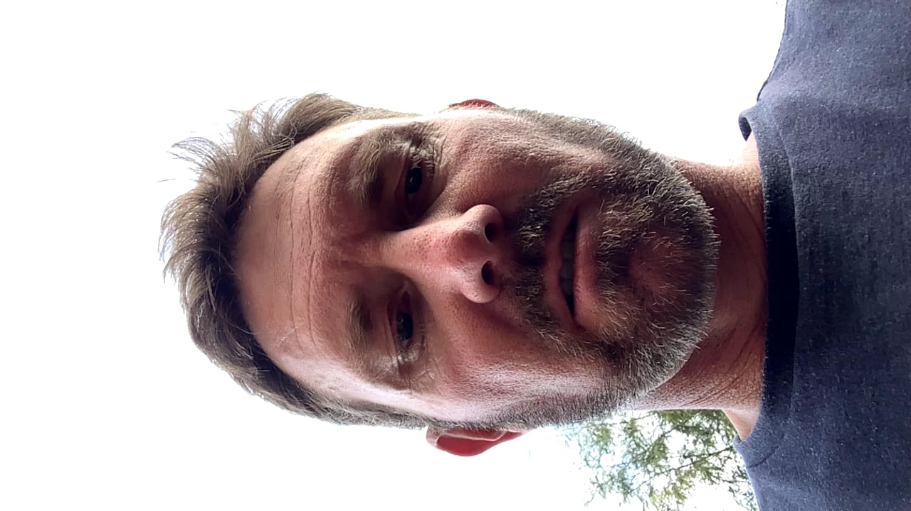
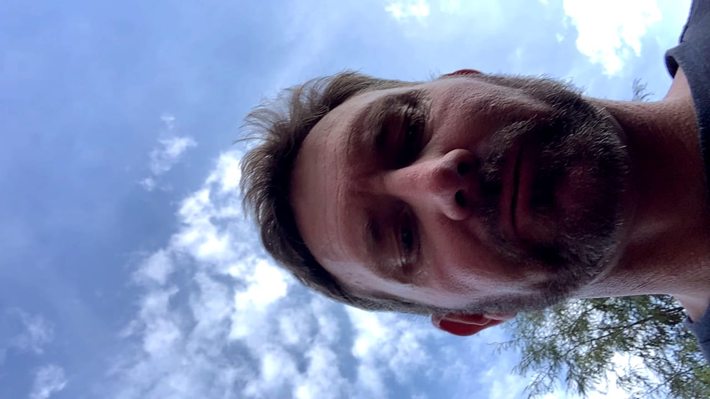
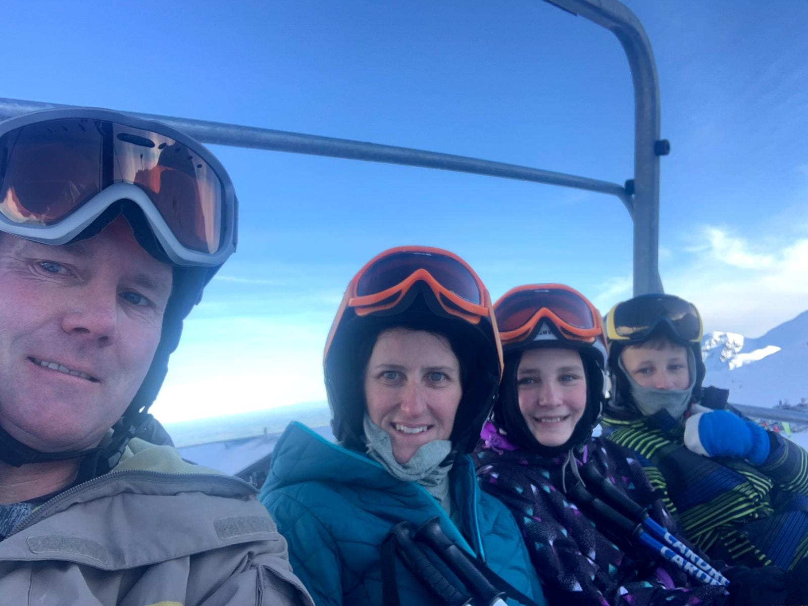
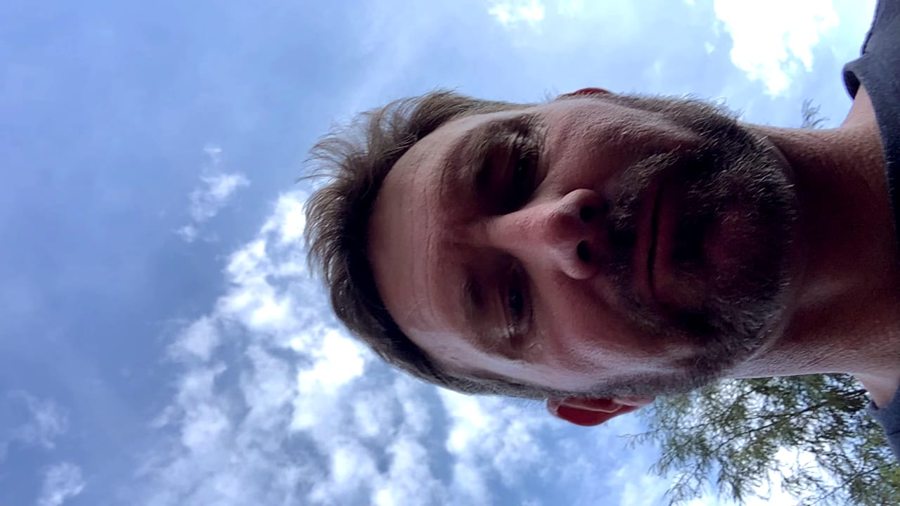
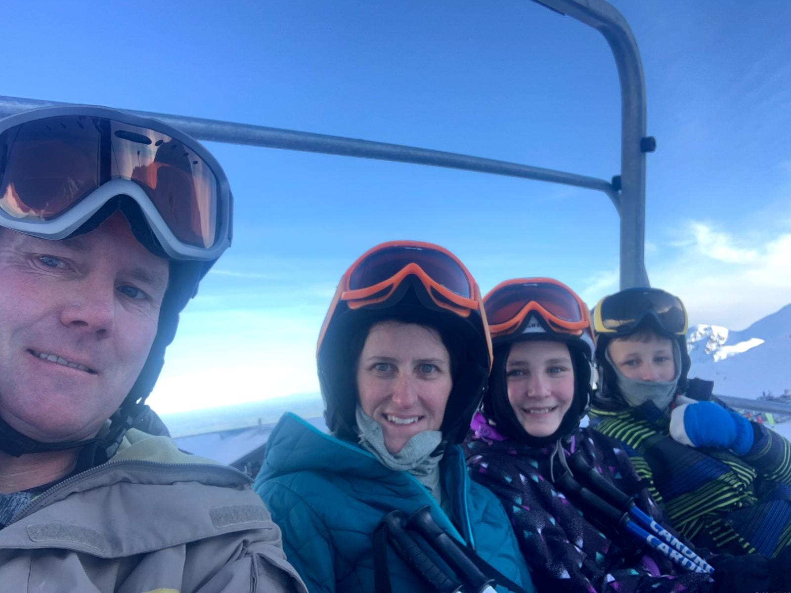

Stuart (Stu Poo)
Explore this page to see all the cool achivemnets of stuart
Stuart and his tell watching skills
Stu loves his tell watching. The best bonding time the Gee family can get out of Stu is through going on a screen which seems to mostly be the T.V. Katelyn loves the rare moments so can suck up watching T.V in order to spend time with Stu Poo. Heres a clip on Stu watching some T.V with me and the rest of the Family.
Photos
Stuart really did love to take selfies with the family, here of the photos he is involved in:

 


